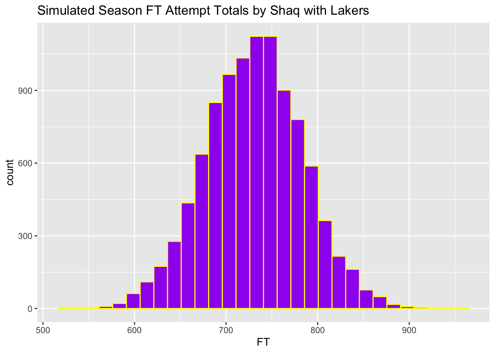
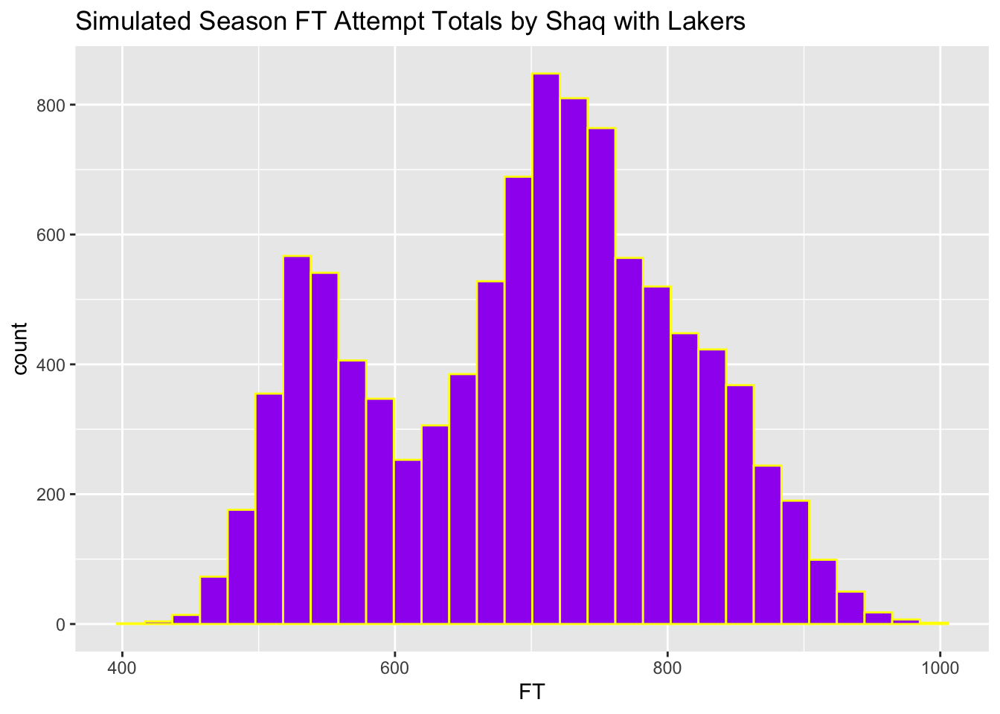

Chapter 3 Monte Carlo Simulation
3.1 Basics
Monte Carlo Simulation is a collection of computer-driven, computational algorithms that use repeated random sampling to calculate estimates. The basic steps for such a simulation are as follows:
Initialize vectors and variables
Run a simulation and calculate the estimate of interest
Save the estimate
Run the simulation “n” times
Analyze the estimates from the “n” simulations
One function that will be particularly useful for simulation is set.seed().
set.seed() allows us to replicate any simulation by giving the initial seed for the simulation. The actual number that is “seeded” is not particularly important though if you want to replicate the same simulations, you will want to re-use this number.
Example 3.1 Simulate 10 overtime coin tosses with and without using set.seed() and compare the results
# Sample 1
sample(c("H", "T"), size = 10, prob = c(0.5, 0.5), replace = T)## [1] "T" "H" "T" "T" "T" "H" "H" "T" "H" "H"# Sample 2
sample(c("H", "T"), size = 10, prob = c(0.5, 0.5), replace = T)## [1] "H" "T" "T" "T" "H" "T" "T" "T" "T" "H"# Sample 3
set.seed(2020)
sample(c("H", "T"), size = 10, prob = c(0.5, 0.5), replace = T)## [1] "H" "T" "H" "T" "T" "T" "T" "T" "T" "H"# Sample 4
set.seed(2020)
sample(c("H", "T"), size = 10, prob = c(0.5, 0.5), replace = T)## [1] "H" "T" "H" "T" "T" "T" "T" "T" "T" "H"Simulation can be very helpful when you want to estimate quantities that are not easily solved using analytical methods like formulas.
Example 3.2 Shaquille O’Neal has a career free throw percentage of 52.7%. Suppose that Shaq takes 10 free throw shots. What is the probability that he makes all 10 shots?
In this case, we can calculate the exact probability of interest using binomial random variable.
dbinom(x = 10, size = 10, prob = 0.527)## [1] 0.001652366In more complicated simulations, there may not be an easy formula to use to calculate the value of interest. In these situations, simulation can be very helpful in estimating quantities.
set.seed(2020)
# Number of Simulations
n.sims <- 10000
# Initialize FT variable with 10000 zeros
FT <- rep(0, n.sims)
for (i in 1:n.sims) {
# Simulate 10 free throws
temp <- sample(x = c(0, 1), size = 10, replace = T, prob = c(0.473, 0.527))
# Count the number of free throws made and store them in FT
FT[i] <- sum(temp)
}
FT %>%
as.data.frame() %>%
ggplot(aes(x = FT)) + geom_bar() + ggtitle("Number of free throws made out of 10") +
scale_x_continuous(breaks = seq(0, 10, by = 2))
prob10 <- sum(FT == 10)/n.sims
prob10## [1] 0.0023The estimated probability that Shaq goes 10-for-10 in free throw attempts based on his career average is 0.0023.
If we run the simulation again with a different seed, we will get another estimate (0.0019).
set.seed(1)
# Number of Simulations
n.sims <- 10000
# Initialize FT variable with 10000 zeros
FT <- rep(0, n.sims)
for (i in 1:n.sims) {
# Simulate 10 free throws
temp <- sample(x = c(0, 1), size = 10, replace = T, prob = c(0.473, 0.527))
# Count the number of free throws made and store them in FT
FT[i] <- sum(temp)
}
prob10 <- sum(FT == 10)/n.sims
prob10## [1] 0.0019As we increase the number of simulations, the estimate will become more accurate.
set.seed(1)
# Number of Simulations
n.sims <- 1e+05
# Initialize FT variable with 10000 zeros
FT <- rep(0, n.sims)
for (i in 1:n.sims) {
# Simulate 10 free throws
temp <- sample(x = c(0, 1), size = 10, replace = T, prob = c(0.473, 0.527))
# Count the number of free throws made and store them in FT
FT[i] <- sum(temp)
}
prob10 <- sum(FT == 10)/n.sims
prob10## [1] 0.00174One way to simulate data is to make assumptions about the distributions of the underlying data. The random variables given in the last chapter as possible candidates.
Example 3.3 In 1997-1998 with the Los Angeles Lakers, Shaq attempted an average of 11.35 free throws per game with a standard deviation of 4.04. While with the Lakers, Shaq played in an average of 63.6 games per year with a standard deviation of 10.6. Create a simulation to model the season total number of free throw attempts that Shaq would have while with the Lakers.
Note: his actual season totals of free throws attempted while with the Lakers were: 479, 681, 498, 824, 972, 712, 725, 676
Let’s model the number of games that Shaq played in as a Binomial random variable. There are 82 regular sesaon games, so let \(n=82\). Shaq played in an average of 63.6 games, so let \(p=\frac{64.25}{82}=0.784\). Shaq played in about 78% of the games during his career with the Lakers.
For the number of free throw attempts per game, we could model this as a Poisson random variable or a Negative Binomial random variable. As noted in the previous chapter, the variance of Shaq’s FT attempts is a fair bit greater than the mean which means that it is overdispersed. Negative Binomial may be a more appropriate model than a Poisson. From last chapter, we found \(\hat{r}=25.85\) and \(\hat{p}=0.305\).
set.seed(2020)
n.sims <- 10000
FT <- rep(0, n.sims)
# simulate the number of games played in a season, round to a whole number
games.sim <- rbinom(n = n.sims, size = 82, prob = 0.784)
# number of games can't exceed 82 games (regular season total)
games.sim[games.sim > 82] = 82
for (i in 1:n.sims) {
# simulate the season total FT attempts in each simulation
temp <- rnbinom(n = games.sim[i], size = 25.85, prob = 1 - 0.305)
FT[i] <- sum(temp)
}
# Simulated mean and SD of season totals of free throw attempts
c(mean(FT), sd(FT))## [1] 730.47550 53.20566# Actual mean and SD of season totals of free throw attempts
FT.actual <- c(479, 681, 498, 824, 972, 712, 725, 676)
FT.actual.mean <- mean(FT.actual)
FT.actual.var <- var(FT.actual) * 7/8 # population variance
FT.actual.sd <- sqrt(FT.actual.var)
c(FT.actual.mean, FT.actual.sd)## [1] 695.8750 150.2393FT %>%
as.data.frame() %>%
ggplot(aes(x = FT)) + geom_histogram(bins = 30, color = "yellow", fill = "purple") +
ggtitle("Simulated Season FT Attempt Totals by Shaq with Lakers")
Notice that the mean of our simulation is somewhat close to Shaq’s true season average number of free throw attempts but the variance of the simulation is far too low.
We can also simulate data using resampling. In this case, rather than simulating random variables according to a distribution, we can use our actual data as a sampling distribution.
Example 3.4 Using resampling, simulate the number of free throws Shaq would attempt while with the Lakers. Compare the mean and variance of the simulation to Shaq’s actual statistics.
set.seed(2020)
n.sims <- 10000
FT <- rep(0, n.sims)
shaq.games <- c(51, 60, 49, 79, 74, 67, 67, 67)
shaq.FTA <- read_csv("data/shaqFT.csv", col_names = FALSE)
shaq.FTA <- shaq.FTA$X1
# sample (with replacement) from Shaq's FTA game totals
games.sim <- sample(x = shaq.games, size = n.sims, replace = T)
for (i in 1:n.sims) {
# sample (with replacement) from Shaq's FTA game totals
temp <- sample(x = shaq.FTA, size = games.sim[i], replace = T)
FT[i] <- sum(temp)
}
# Simulated mean and SD of season totals of free throw attempts
c(mean(FT), sd(FT))## [1] 695.8883 112.6666# Actual mean and SD of season totals of free throw attempts
FT.actual <- c(479, 681, 498, 824, 972, 712, 725, 676)
FT.actual.mean <- mean(FT.actual)
FT.actual.var <- var(FT.actual) * 7/8 # population variance
FT.actual.sd <- sqrt(FT.actual.var)
c(FT.actual.mean, FT.actual.sd)## [1] 695.8750 150.2393FT %>%
as.data.frame() %>%
ggplot(aes(x = FT)) + geom_histogram(bins = 30, color = "yellow", fill = "purple") +
ggtitle("Simulated Season FT Attempt Totals by Shaq with Lakers")
This simulation is biased low on the variance but is better than the earlier simulation.
One reason that you may want to do complicated simulations like the example above is to make predictions for a player’s future seasons.
3.2 Estimating Probabilities
We can use simulation to estimate probabilities of different events occurring. One way to do this is for each simulation to record a “1” if the event of interest occurs and a “0” if the event of interest does not occur.
Definition 3.1 The indicator function, \(I(A)\), is defined such that \(I(A)\) is equal to 1 if \(A\) occurs and is equal to 0 if \(A\) does not occur.
For instance, suppose we roll a die and a “6” is on top. Then we have the following: \(I(6)=1, I(5)=0, I(even)=1, I(odd)=0\).
One way to calculate probabilities is to use the following rule: \(P(A) = E[I(A)]\). The probability that \(A\) occurs is equal to the expected value of the indicator function of \(A\).
Example 3.5 During the 2021 WNBA season, Kahleah Copper of the Chicago Sky had a free throw percentage of 81.8%. She played a total of 32 games and the probability mass function for number of free throw attempts per game are given in the table below. Estimate the probability that Copper did not make a free throw in a game. [Note: Copper did not make a free throw in 6 out of the 32 games for a probability of 0.1875.]
| 0 | 1 | 2 | 3 | 4 | 5 | 6 | 7 | 8 |
| 5 | 2 | 8 | 0 | 7 | 2 | 4 | 2 | 2 |
| 0.156 | 0.062 | 0.250 | 0.000 | 0.219 | 0.062 | 0.125 | 0.062 | 0.062 |
set.seed(2020)
n.sims <- 10000
games <- 32
FTprob <- 0.818
FTA <- 0:8
nFTA <- c(5, 2, 8, 0, 7, 2, 4, 2, 2)
pFTA <- nFTA/32
FT <- rep(0, n.sims)
FT0.ind <- rep(0, n.sims)
# Simulate the number of FTA per game
FTA.sim <- sample(x = FTA, size = n.sims, replace = T, prob = pFTA)
# Simulate 10,000 games and record number of FT made
for (i in 1:n.sims) {
FT[i] <- rbinom(n = 1, size = FTA.sim[i], prob = 0.818)
}
# Look at the header of the simulated data
head(FT)## [1] 6 3 0 0 1 1# Create indicator function for 0 FT made
FT0.ind = FT == 0
head(FT0.ind)## [1] FALSE FALSE TRUE TRUE FALSE FALSE# Estimate probability of 0 FT made
sum(FT0.ind)/n.sims## [1] 0.17113.3 A few reminders/tips for simulation, and a basic example
The number of regulation goals scored in a game by Hockey Team A, \(X\), is a Poisson(4) random variable, and the same for Hockey Team B, \(Y\), is a Poisson(3.2) random variable.
A statistician is interested in the probability that Team A defeats Team B in regulation. This is \(P(X > Y)\), which is difficult to calculate manually. However, using simulation, we can straightforwardly obtain an accurate estimation of this quantity.
There are many built-in functions in R that allow users to generate realizations from common probability distributions (rnorm, rbinom, rexp, etc.) Let’s use the rpois function to simulate the appropriate variables, remembering to set a seed so that our results are easily replicable.
set.seed(2022)
nReps <- 10000
team_A_goals <- rpois(n = nReps, lambda = 4)
team_B_goals <- rpois(n = nReps, lambda = 3.2)Now, to find \(P(X > Y)\), we can use the following line of code:
mean(team_A_goals > team_B_goals)## [1] 0.5415Why does this work? First, operations to vectors are executed elementwise, meaning that R compares team_A_goals[1] to team_B_goals[1], then team_A_goals[2] to team_B_goals[2], and so on. Second, logical operators are stored as zeroes (when the condition is false) and ones (when the condition is true). The mean of a vector of zeroes and ones is the proportion of ones, which is the frequency of the logical statement being true. In our simulation, it was 0.5415. The true value is 0.5427, meaning that the simulation was quite accurate.
These tips will help you be more efficient when performing simulation tasks in R.
3.4 Streak Simulation - Basketball
Suppose an NBA team is in the middle of a rebuild and has a 25% probability of winning each of its games in the following 82-game season.
Q: What is the probability that the team will go on at least one winning streak of four or more games over the course of the 82-game season?
A: We can simulate a season for the team, find the longest winning streak in that season, and store it in a vector. After repeating that process 10,000 times, we can then find the proportion of the values in that vector that are greater than or equal to 4.
set.seed(2022)
nReps <- 10000
longest_streak <- rep(NA, nReps)
for (i in 1:nReps) {
game_results <- rbinom(size = 1, n = 82, prob = 0.25) # 1=win, 0=loss
streaks <- rle(game_results)
longest_streak[i] <- max(streaks$lengths[streaks$values == 1])
}
table(longest_streak)## longest_streak
## 1 2 3 4 5 6 7 8 9
## 116 3626 4233 1480 410 105 21 7 2mean(longest_streak >= 4)## [1] 0.2025The team had a 4+ game winning streak in about 20% of the simulations.